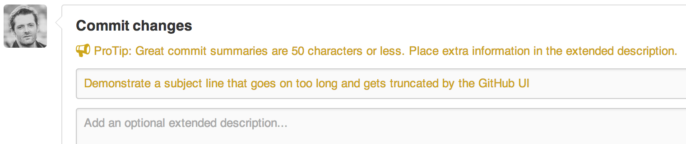
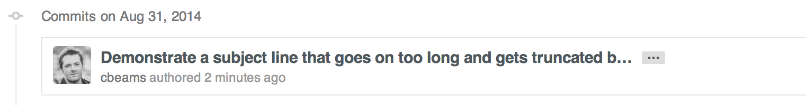

This article was originally written by Chris Beam on his blog. It's really great. Introduction: Why good commit messages matter If you browse the log of any random Git repository, you will probably find its commit messages are more or less a mess. For example, take a look at these gems from my early days committing to Spring: $ git log --oneline -5 --author cbeams --before "Fri Mar 26 2009" e5f4b49 Re-adding ConfigurationPostProcessorTests after its brief removal in r814. @Ignore-ing the testCglibClassesAreLoadedJustInTimeForEnhancement() method as it turns out this was one of the culprits in the recent build breakage. The classloader hacking causes subtle downstream effects, breaking unrelated tests. The test method is still useful, but should only be run on a manual basis to ensure CGLIB is not prematurely classloaded, and should not be run as part of the automated build. 2db0f12 fixed two build-breaking issues: + reverted ClassMetadataReadingVisitor to revision 794 + eliminated ConfigurationPostProcessorTests until further investigation determines why it causes downstream tests to fail (such as the seemingly unrelated ClassPathXmlApplicationContextTests) 147709f Tweaks to package-info.java files 22b25e0 Consolidated Util and MutableAnnotationUtils classes into existing AsmUtils 7f96f57 polishing Yikes. Compare that with these more recent commits from the same repository: $ git log --oneline -5 --author pwebb --before "Sat Aug 30 2014" 5ba3db6 Fix failing CompositePropertySourceTests 84564a0 Rework @PropertySource early parsing logic e142fd1 Add tests for ImportSelector meta-data 887815f Update docbook dependency and generate epub ac8326d Polish mockito usage Which would you rather read? The former varies in length and form; the latter is concise and consistent. The former is what happens by default; the latter never happens by accident. While many repositories' logs look like the former, there are exceptions. The Linux kernel and Git itself are great examples. Look at Spring Boot, or any repository managed by Tim Pope. The contributors to these repositories know that a well-crafted Git commit message is the best way to communicate context about a change to fellow developers (and indeed to their future selves). A diff will tell you what changed, but only the commit message can properly tell you why. Peter Hutterer makes this point well: Re-establishing the context of a piece of code is wasteful. We can't avoid it completely, so our efforts should go to reducing it [as much] as possible. Commit messages can do exactly that and as a result, a commit message shows whether a developer is a good collaborator. If you haven't given much thought to what makes a great Git commit message, it may be the case that you haven't spent much time using git log and related tools. There is a vicious cycle here: because the commit history is unstructured and inconsistent, one doesn't spend much time using or taking care of it. And because it doesn't get used or taken care of, it remains unstructured and inconsistent. But a well-cared for log is a beautiful and useful thing. git blame, revert, rebase, log, shortlog and other subcommands come to life. Reviewing others' commits and pull requests becomes something worth doing, and suddenly can be done independently. Understanding why something happened months or years ago becomes not only possible but efficient. A project's long-term success rests (among other things) on its maintainability, and a maintainer has few tools more powerful than his project's log. It's worth taking the time to learn how to care for one properly. What may be a hassle at first soon becomes habit, and eventually a source of pride and productivity for all involved. In this post, I am addressing just the most basic element of keeping a healthy commit history: how to write an individual commit message. There are other important practices like commit squashing that I am not addressing here. Perhaps I'll do that in a subsequent post. Most programming languages have well-established conventions as to what constitutes idiomatic style, i.e. naming, formatting and so on. There are variations on these conventions, of course, but most developers agree that picking one and sticking to it is far better than the chaos that ensues when everybody does their own thing. A team's approach to its commit log should be no different. In order to create a useful revision history, teams should first agree on a commit message convention that defines at least the following three things: Style. Markup syntax, wrap margins, grammar, capitalization, punctuation. Spell these things out, remove the guesswork, and make it all as simple as possible. The end result will be a remarkably consistent log that's not only a pleasure to read but that actually does get read on a regular basis. Content. What kind of information should the body of the commit message (if any) contain? What should it not contain? Metadata. How should issue tracking IDs, pull request numbers, etc. be referenced? Fortunately, there are well-established conventions as to what makes an idiomatic Git commit message. Indeed, many of them are assumed in the way certain Git commands function. There's nothing you need to re-invent. Just follow the seven rules below and you're on your way to committing like a pro. The seven rules of a great Git commit message Keep in mind: This has all been said before. Separate subject from body with a blank line Limit the subject line to 50 characters Capitalize the subject line Do not end the subject line with a period Use the imperative mood in the subject line Wrap the body at 72 characters Use the body to explain what and why vs. how For example: Summarize changes in around 50 characters or less More detailed explanatory text, if necessary. Wrap it to about 72 characters or so. In some contexts, the first line is treated as the subject of the commit and the rest of the text as the body. The blank line separating the summary from the body is critical (unless you omit the body entirely); various tools like `log`, `shortlog` and `rebase` can get confused if you run the two together. Explain the problem that this commit is solving. Focus on why you are making this change as opposed to how (the code explains that). Are there side effects or other unintuitive consequences of this change? Here's the place to explain them. Further paragraphs come after blank lines. - Bullet points are okay, too - Typically a hyphen or asterisk is used for the bullet, preceded by a single space, with blank lines in between, but conventions vary here If you use an issue tracker, put references to them at the bottom, like this: Resolves: #123 See also: #456, #789 1. Separate subject from body with a blank line From the git commit manpage: Though not required, it's a good idea to begin the commit message with a single short (less than 50 character) line summarizing the change, followed by a blank line and then a more thorough description. The text up to the first blank line in a commit message is treated as the commit title, and that title is used throughout Git. For example, Git-format-patch(1) turns a commit into email, and it uses the title on the Subject line and the rest of the commit in the body. Firstly, not every commit requires both a subject and a body. Sometimes a single line is fine, especially when the change is so simple that no further context is necessary. For example: Fix typo in introduction to user guide Nothing more need be said; if the reader wonders what the typo was, she can simply take a look at the change itself, i.e. use git show or git diff or git log -p. If you're committing something like this at the command line, it's easy to use the -m option to git commit: $ git commit -m "Fix typo in introduction to user guide" However, when a commit merits a bit of explanation and context, you need to write a body. For example: Derezz the master control program MCP turned out to be evil and had become intent on world domination. This commit throws Tron's disc into MCP (causing its deresolution) and turns it back into a chess game. Commit messages with bodies are not so easy to write with the -m option. You're better off writing the message in a proper text editor. If you do not already have an editor set up for use with Git at the command line, read this section of Pro Git. In any case, the separation of subject from body pays off when browsing the log. Here's the full log entry: $ git log commit 42e769bdf4894310333942ffc5a15151222a87be Author: Kevin Flynn Date: Fri Jan 01 00:00:00 1982 -0200 Derezz the master control program MCP turned out to be evil and had become intent on world domination. This commit throws Tron's disc into MCP (causing its deresolution) and turns it back into a chess game. And now git log --oneline, which prints out just the subject line: $ git log --oneline 42e769 Derezz the master control program Or, git shortlog, which groups commits by user, again showing just the subject line for concision: $ git shortlog Kevin Flynn (1): Derezz the master control program Alan Bradley (1): Introduce security program "Tron" Ed Dillinger (3): Rename chess program to "MCP" Modify chess program Upgrade chess program Walter Gibbs (1): Introduce protoype chess program There are a number of other contexts in Git where the distinction between subject line and body kicks in—but none of them work properly without the blank line in between. 2. Limit the subject line to 50 characters 50 characters is not a hard limit, just a rule of thumb. Keeping subject lines at this length ensures that they are readable, and forces the author to think for a moment about the most concise way to explain what's going on. Tip: If you're having a hard time summarizing, you might be committing too many changes at once. Strive for atomic commits (a topic for a separate post). GitHub's UI is fully aware of these conventions. It will warn you if you go past the 50 character limit:  And will truncate any subject line longer than 72 characters with an ellipsis:  So shoot for 50 characters, but consider 72 the hard limit. 3. Capitalize the subject line This is as simple as it sounds. Begin all subject lines with a capital letter. For example: Accelerate to 88 miles per hour Instead of: accelerate to 88 miles per hour 4. Do not end the subject line with a period Trailing punctuation is unnecessary in subject lines. Besides, space is precious when you're trying to keep them to 50 chars or less. Example: Open the pod bay doors Instead of: Open the pod bay doors. 5. Use the imperative mood in the subject line Imperative mood just means "spoken or written as if giving a command or instruction". A few examples: Clean your room Close the door Take out the trash Each of the seven rules you're reading about right now are written in the imperative ("Wrap the body at 72 characters", etc.). The imperative can sound a little rude; that's why we don't often use it. But it's perfect for Git commit subject lines. One reason for this is that Git itself uses the imperative whenever it creates a commit on your behalf. For example, the default message created when using git merge reads: Merge branch 'myfeature' And when using git revert: Revert "Add the thing with the stuff" This reverts commit cc87791524aedd593cff5a74532befe7ab69ce9d. Or when clicking the "Merge" button on a GitHub pull request: Merge pull request #123 from someuser/somebranch So when you write your commit messages in the imperative, you're following Git's own built-in conventions. For example: Refactor subsystem X for readability Update getting started documentation Remove deprecated methods Release version 1.0.0 Writing this way can be a little awkward at first. We're more used to speaking in the indicative mood, which is all about reporting facts. That's why commit messages often end up reading like this: Fixed bug with Y Changing behavior of X And sometimes commit messages get written as a description of their contents: More fixes for broken stuff Sweet new API methods To remove any confusion, here's a simple rule to get it right every time. A properly formed Git commit subject line should always be able to complete the following sentence: If applied, this commit will your subject line here For example: If applied, this commit will refactor subsystem X for readability If applied, this commit will update getting started documentation If applied, this commit will remove deprecated methods If applied, this commit will release version 1.0.0 If applied, this commit will merge pull request #123 from user/branch Notice how this doesn't work for the other non-imperative forms: If applied, this commit will fixed bug with Y If applied, this commit will changing behavior of X If applied, this commit will more fixes for broken stuff If applied, this commit will sweet new API methods Remember: Use of the imperative is important only in the subject line. You can relax this restriction when you're writing the body. 6. Wrap the body at 72 characters Git never wraps text automatically. When you write the body of a commit message, you must mind its right margin, and wrap text manually. The recommendation is to do this at 72 characters, so that Git has plenty of room to indent text while still keeping everything under 80 characters overall. A good text editor can help here. It's easy to configure Vim, for example, to wrap text at 72 characters when you're writing a Git commit. Traditionally, however, IDEs have been terrible at providing smart support for text wrapping in commit messages (although in recent versions, IntelliJ IDEA has finally gotten better about this). 7. Use the body to explain what and why vs. how This commit from Bitcoin Core is a great example of explaining what changed and why: commit eb0b56b19017ab5c16c745e6da39c53126924ed6 Author: Pieter Wuille Date: Fri Aug 1 22:57:55 2014 +0200 Simplify serialize.h's exception handling Remove the 'state' and 'exceptmask' from serialize.h's stream implementations, as well as related methods. As exceptmask always included 'failbit', and setstate was always called with bits = failbit, all it did was immediately raise an exception. Get rid of those variables, and replace the setstate with direct exception throwing (which also removes some dead code). As a result, good() is never reached after a failure (there are only 2 calls, one of which is in tests), and can just be replaced by !eof(). fail(), clear(n) and exceptions() are just never called. Delete them. Take a look at the full diff and just think how much time the author is saving fellow and future committers by taking the time to provide this context here and now. If he didn't, it would probably be lost forever. In most cases, you can leave out details about how a change has been made. Code is generally self-explanatory in this regard (and if the code is so complex that it needs to be explained in prose, that's what source comments are for). Just focus on making clear the reasons why you made the change in the first place—the way things worked before the change (and what was wrong with that), the way they work now, and why you decided to solve it the way you did. The future maintainer that thanks you may be yourself! Tips Learn to love the command line. Leave the IDE behind. For as many reasons as there are Git subcommands, it's wise to embrace the command line. Git is insanely powerful; IDEs are too, but each in different ways. I use an IDE every day (IntelliJ IDEA) and have used others extensively (Eclipse), but I have never seen IDE integration for Git that could begin to match the ease and power of the command line (once you know it). Certain Git-related IDE functions are invaluable, like calling git rm when you delete a file, and doing the right stuff with git when you rename one. Where everything falls apart is when you start trying to commit, merge, rebase, or do sophisticated history analysis through the IDE. When it comes to wielding the full power of Git, it's command-line all the way. Remember that whether you use Bash or Zsh or Powershell, there are tab completion scripts that take much of the pain out of remembering the subcommands and switches. Read Pro Git The Pro Git book is available online for free, and it's fantastic. Take advantage!
Other articles you might like: Keyboard shortcut and command line utility to switch display (Windows) Using WSL-2 as a dev environment Polynomial basis expansion